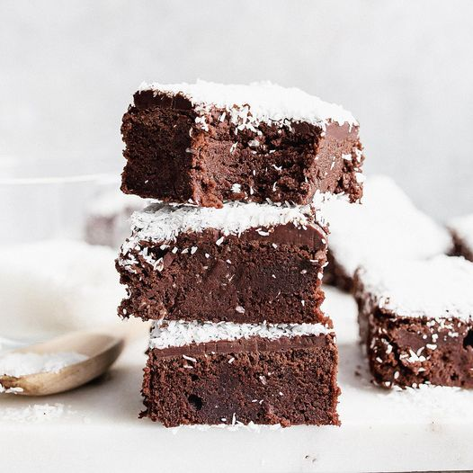

Schokoladenwürfel

Beschreibung
6
Leckere, Teigige Schokoladenwürfel mit Kokosflocken.
Zutaten
- 200 gramm Zartbitterschokolade
- 250 gramm Butter
- 150 gramm Zucker
- 1 Pack Vanillezucker
- 6 Eier
- 2 MS Salz
- 200 gramm gemahlene Mandeln
- 150 gramm Kokosflocken
- 100 gramm Mehl
Zubereitung
- Schokolade im Wasserbad schmelzen
- Butter, Zucker, Vanillezucker, Eier und Salz verrühren
- Mandeln, Kokos, Mehl mischen und flüssige Schokolade hinzugeben
- Buttermasse und Schokolade zusammenrühren
- Masse auf ein Backblech mit hohem Rand geben
- 15 Minuten bei 180°C Umluft backen
- Abkühlen lassen und in kleine Würfel schneiden
- Genießen!
Zurück zum Index